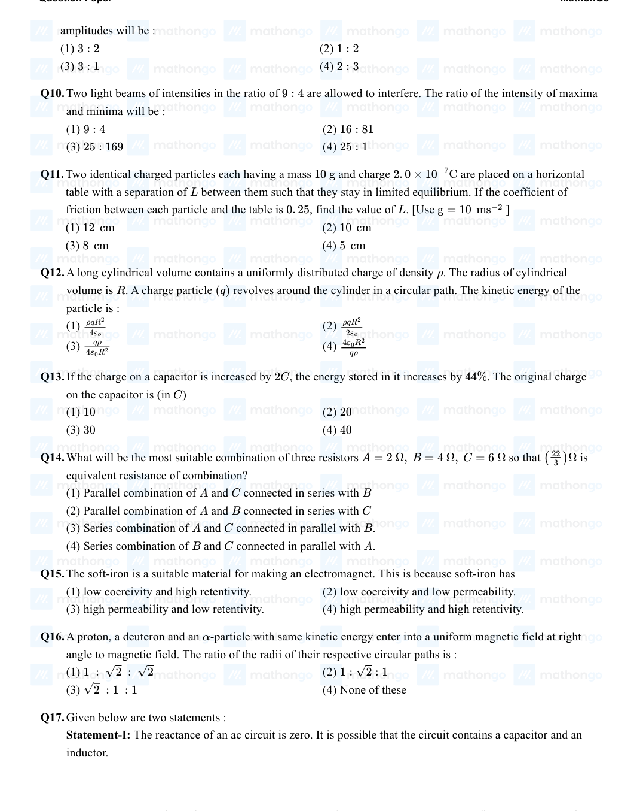
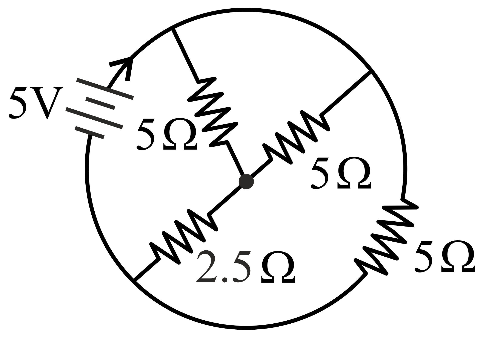
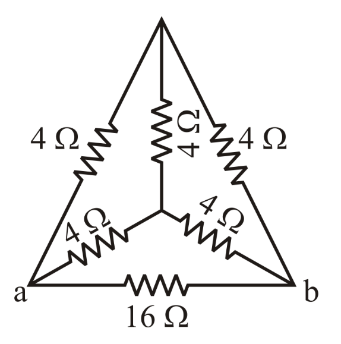
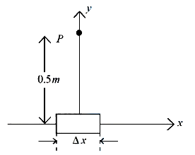
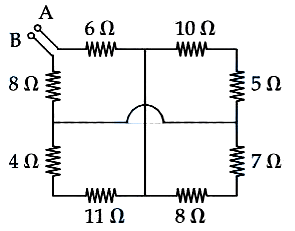
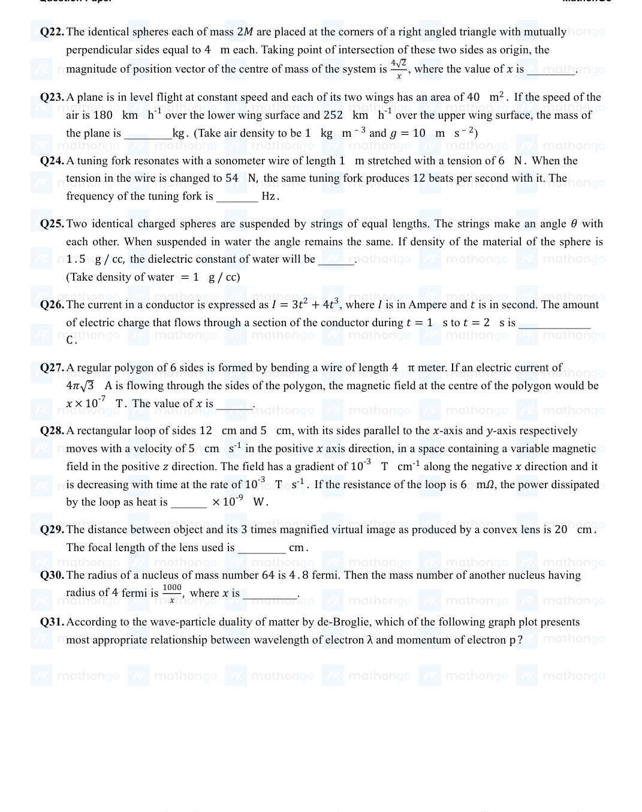

Filter questions
Q1
PHY-2021-0101-S1-Q011
2021 | 16 Mar | Shift 1
—
MCQ
For changing the capacitance of a given paralle plate capacitor, a dielectric material of dielectric constant K is used, which has the same area as the plates of the capacitor. The thickness of the dielectric slab is 3 4 d, where d is the separation between the plates of parallel plate capacitor. The new capacitance ′ in terms of original C capacitance C0 is given by the following relation: 3+K 4+K
Answer: C
Q2
PHY-2021-0101-S2-Q028
2021 | 16 Mar | Shift 2
—
Integer
In a parallel plate capacitor set up, the plate area of capacitor is 2 m2 and the plates are separated by 1 m. If the space between the plates are filled with a dielectric material of thickness 0.5 m and are 2 m2 (see figure) the capacitance of the set-up will be ε0 ________. (Dielectric constant of the material = 3.2 ) (Round off to the Nearest Integer)
Answer: 3
Q3
PHY-2021-0101-S1-Q026
2021 | 17 Mar | Shift 1
—
Integer
Four identical rectangular plates with length, l = 2 cm and breadth, b = 3 cm are arranged as shown in xε0 2 figure. The equivalent capacitance between A and C is d. The value of x is _______. (Round off to the Nearest Integer)
Answer: 2
Q4
PHY-2021-0101-S1-Q027
2021 | 18 Mar | Shift 1
—
Integer
A parallel plate capacitor has plate area 100 m2 and plate separation of 10 m. The space between the plates is filled up to a thickness 5 m with a material of dielectric constant of 10. The resultant capacitance of the system is x pF. The value of ε0 = 8.85 × 10−12 F m−1. The value of x to the nearest integer is ______.
Answer: 161
Q5
PHY-2021-0101-S1-Q015
2021 | 20 Jul | Shift 1
—
MCQ
AC voltage V (t) = 20 sin ωt of frequency 50 Hz is applied to a parallel plate capacitor. The separation between the plates is 2 mm and the area is 1 m2. The amplitude of the oscillating displacement current for the applied AC voltage is [Take ε0 = 8.85 × 10−12 F m−1]
Answer: C
Q6
PHY-2021-0101-S1-Q013
2021 | 24 Feb | Shift 1
—
MCQ
Two equal capacitors are first connected in series and then in parallel. The ratio of the equivalent capacities in the two cases will be:
Answer: B
Q7
PHY-2021-0101-S1-Q029
2021 | 25 Feb | Shift 1
—
Integer
A transmitting station releases waves of wavelength 960 m. A capacitor of 2.56 μF is used in the resonant circuit. The self-inductance of coil necessary for resonance is x × 10−8 H. find x
Answer: 10
Q8
PHY-2021-0101-S2-Q011
2021 | 25 Feb | Shift 2
—
MCQ
An electron with kinetic energy K1 enters between parallel plates of a capacitor at an angle α with the plates. It leaves the plates at angle with kinetic energy Then the ratio of kinetic energies will be: β K2. K1: K2
Answer: D
Q9
PHY-2021-0101-S1-Q010
2021 | 25 Jul | Shift 1
—
MCQ
A parallel plate capacitor with plate area 'A' and distance of separation 'd' is filled with a dielectric. What is the capacity of the capacitor when permittivity of the dielectric varies as: εx= ε0 + kx, for 0 < x≤ d d 2 εx= ε0 + kd- x, for ≤x≤d 2 / kA 2 kA
Answer: B
Q10
PHY-2021-0101-S2-Q012
2021 | 25 Jul | Shift 2
—
MCQ
If qf is the free charge on the capacitor plates and qb is the bound charge on the dielectric slab of dielectric constant k placed between the capacitor plates, then bound charge qb can be expressed as:
Answer: B
Q11
PHY-2021-0101-S1-Q013
2021 | 26 Aug | Shift 1
—
MCQ
A series LCR circuit driven by 300 V at a frequency of 50 Hz contains a resistance R = 3 kΩ, an inductor of inductive reactance XL = 250π Ω and an unknown capacitor. The value of capacitance to maximise the average power should be: (take π2 = 10)
Answer: B
Q12
PHY-2021-0101-S2-Q012
2021 | 26 Aug | Shift 2
—
MCQ
A parallel-plate capacitor with plate area A has separation d between the plates. Two dielectric slabs of dielectric constant K1 and K2 of same area A 2 and thickness d 2 are inserted in the space between the plates. The capacitance of the capacitor will be given by:
Answer: A
Q13
PHY-2021-0101-S2-Q015
2021 | 26 Aug | Shift 2
—
MCQ
In the given circuit the AC source has ω = 100 rad s−1. Considering the inductor and capacitor to be ideal, what will be the current I flowing through the circuit?
Answer: D
Q14
PHY-2021-0101-S1-Q013
2021 | 26 Feb | Shift 1
—
MCQ
Consider the combination of two capacitors C1 and C2, with C2 > C1, when connected in parallel, the equivalent capacitance is 10 times the equivalent capacitance of the same connected in series. Calculate the ratio of capacitors, C2. C1
Answer: A
Q15
PHY-2021-0101-S2-Q011
2021 | 27 Aug | Shift 2
—
MCQ
Three capacitors C1 = 2 μF, C2 = 6 μF and C3 = 12 μF are connected as shown in the figure. Find the ratio of the charges on capacitors C1, C2 and C3 respectively.
Answer: D
Q16
PHY-2021-0101-S1-Q013
2021 | 27 Jul | Shift 1
—
MCQ
A capacitor of capacitance C = 1 μF is suddenly connected to a battery of 100 V through a resistance R = 100 Ω. The time taken for the capacitor to be charged to get 50 V is: (Take ln 2 = 0.69 )
Answer: C
Q17
PHY-2021-0101-S1-Q014
2021 | 27 Jul | Shift 1
—
MCQ
In the reported figure, a capacitor is formed by placing a compound dielectric between the plates of parallel plate capacitor. The expression for the capacity of the said capacitor will be: (Given the area of the plate = A )

Answer: A
Q18
PHY-2021-0101-S1-Q028
2021 | 27 Jul | Shift 1
—
Integer
A radioactive sample has an average life of 30 ms and is decaying. A capacitor of capacitance 200 μF is first charged and later connected with resistor R. If the ratio of the charge on the capacitor to the activity of the radioactive sample is fixed with respect to time then the value of should be R _______Ω.
Answer: 150
Q19
PHY-2021-0101-S2-Q002
2021 | 27 Jul | Shift 2
—
MCQ
Match List I with List II. List-I List-II a Capacitance, C i M1 L1 T−3 A−1 b Permittivity of free space, ε0 ii M−1 L−3 T4 A2 c Permeability of free space, μ0 iii M−1 L−2 T4 A2 M1L1T−2A−2 d Electric field, E iv Choose the correct answer from the options given below
Answer: Option Question
Q20
PHY-2021-0101-S1-Q026
2021 | 31 Aug | Shift 1
—
Integer
A capacitor of 50μF is connected in a circuit as shown in figure. The charge on the upper plate of the capacitor is _________ μC.
Answer: 100
Q21
PHY-2021-0101-S2-Q020
2021 | 31 Aug | Shift 2
—
MCQ
Statement I: To get a steady DC output from the pulsating voltage received from a full wave rectifier we can connect a capacitor across the output parallel to the load RL. Statement II: To get a steady DC output from the pulsating voltage received from a full wave rectifier we can connect an inductor in series with RL. In the light of the above statements, choose the most appropriate answer from the options given below:
Answer: B
Q22
PHY-2021-0101-S2-Q023
2021 | 31 Aug | Shift 2
—
Integer
A parallel plate capacitor of capacitance 200μF is connected to a battery of 200 V. A dielectric slab of dielectric constant 2 is now inserted into the space between plates of capacitor while the battery remain connected. The change in the electrostatic energy in the capacitor will be __________ J.

Answer: 4
Q23
PHY-2022-0101-S1-Q012
2022 | 24 Jun | Shift 1
—
MCQ
A parallel plate capacitor is formed by two plates each of area 30π cm2 separated by 1 mm. A material of dielectric strength 3.6 × 107 V m−1 is filled between the plates. If the maximum charge that can be stored on the capacitor without causing any dielectric breakdown is 7 × 10−6 C, the value of dielectric constant of the material is: [Use 1 = 9 × 109 N m2 C−2 ] 4πεo
Answer: D
Q24
PHY-2022-0101-S2-Q013
2022 | 24 Jun | Shift 2
—
MCQ
If the charge on a capacitor is increased by 2C, the energy stored in it increases by 44%. The original charge on the capacitor is (in ) C
Answer: A
Q25
PHY-2022-0101-S2-Q017
2022 | 24 Jun | Shift 2
—
MCQ
Given below are two statements: Statement-I: The reactance of an ac circuit is zero. It is possible that the circuit contains a capacitor and an inductor. Statement-II: In ac circuit, the average power delivered by the source never becomes zero. In the light of the above statements, choose the correct answer from the options given below

Answer: C
Q26
PHY-2022-0101-S1-Q027
2022 | 25 Jun | Shift 1
—
Integer
The equivalent capacitance between points A and B in below shown figure will be _____ μF.

Answer: 6
Q27
PHY-2022-0101-S2-Q008
2022 | 25 Jun | Shift 2
—
MCQ
Two metallic plates form a parallel plate capacitor. The distance between the plate is 'd'. A metal sheet of thickness d and of area equal to area of each plate is introduced between the plates. What will be the ratio of the 2 new capacitance to the original capacitance of the capacitor?
Answer: B
Q28
PHY-2022-0101-S2-Q010
2022 | 26 Jun | Shift 2
—
MCQ
The charge on capacitor of capacitance 15μF in the figure given below is
Answer: A
Q29
PHY-2022-0101-S2-Q011
2022 | 26 Jun | Shift 2
—
MCQ
A parallel plate capacitor with plate area A and plate separation d = 2 m has a capacitance of 4 μF. The new capacitance of the system if half of the space between them is filled with a dielectric material of dielectric constant (as shown in figure) will be K = 3
Answer: C
Q30
PHY-2022-0101-S1-Q012
2022 | 27 Jun | Shift 1
—
MCQ
A force of 10 N acts on a charged particle placed between two plates of a charged capacitor. If one plate of capacitor is removed, then the force acting on that particle will be.
Answer: A
Q31
PHY-2022-0101-S1-Q024
2022 | 27 Jun | Shift 1
—
Integer
A capacitor of capacitance 50 pF is charged by 100 V source. It is then connected to another uncharged identical capacitor. Electrostatic energy loss in the process is____ nJ.
Answer: 125
Q32
PHY-2022-0101-S2-Q025
2022 | 27 Jun | Shift 2
—
Integer
A parallel plate capacitor is made up of stair like structure with a plate area A of each stair and that is connected with a wire of length b, as shown in the figure. The capacitance of the arrangement is x ε0 A, The 15 b value of x is _____.

Answer: 23
Q33
PHY-2022-0101-S2-Q025
2022 | 28 Jun | Shift 2
—
Integer
A capacitor C1 of capacitance 5 μF is charged to a potential of 30 V using a battery. The battery is then removed and the charged capacitor is connected to an uncharged capacitor C2 of capacitance 10 μF as shown in figure. When the switch is closed charge flows between the capacitors. At equilibrium, the charge on the capacitor C2 is _____ μC.
Answer: 100
Q34
PHY-2022-0101-S1-Q013
2022 | 29 Jun | Shift 1
—
MCQ
A parallel plate capacitor filled with a medium of dielectric constant, is connected across a battery and is 10 charged. The dielectric slab is replaced by another slab of dielectric constant 15. Then the energy of capacitor will
Answer: A
Q35
PHY-2023-0101-S1-Q028
2023 | 01 Feb | Shift 1
—
Integer
A series LCR circuit is connected to an ac source of 220 V, 50 Hz. The circuit contain a resistance R= 100 Ω and an inductor of inductive reactance XL= 79.6 Ω. The capacitance of the capacitor needed to maximize the average rate at which energy is supplied will be ______ μF.

Answer: 40
Q36
PHY-2023-0101-S1-Q026
2023 | 06 Apr | Shift 1
—
Integer
A parallel plate capacitor with plate area A and plate separation d is filled with a dielectric material of dielectric constant K= 4. The thickness of the dielectric material is x, where x< d. Let C1 and C2 be the capacitance of the system for x= 1 3d and x= 2d, respectively. If C1 = 2 μF, the value 3 of C2 is _____ μF.

Answer: 3
Q37
PHY-2023-0101-S2-Q017
2023 | 06 Apr | Shift 2
—
MCQ
As shown in the figure, two parallel plate capacitors having equal plate area of 200 cm2 are joined in such a way that a ≠b. The equivalent capacitance of the combination is xε0F. The value of x is _____.
Answer: D
Q38
PHY-2023-0101-S2-Q023
2023 | 06 Apr | Shift 2
—
Integer
A capacitor of capacitance is connected to an alternating source of emf given by 150.0 μF E = 36 sin(120πt) V. The maximum value of current in the circuit is approximately equal to: (1) 2 A (2) √2 A (3) 2√2 A (4) 1 A √2
Answer: 11
Q39
PHY-2023-0101-S1-Q023
2023 | 08 Apr | Shift 1
—
Integer
An oscillating LC circuit consists of a 75 mH inductor and a 1.2 μF capacitor. If the maximum charge to the capacitor is 2.7 μC. The maximum current in the circuit will be _______ mA.
Answer: 10
Q40
PHY-2023-0101-S2-Q016
2023 | 08 Apr | Shift 2
—
MCQ
A 600 pF capacitor is charged by 200 V supply. It is then disconnected from the supply and is connected to another uncharged 600 pF capacitor. Electrostatic energy lost in the process is _____ μJ.
Answer: D
Q41
PHY-2023-0101-S1-Q011
2023 | 10 Apr | Shift 1
—
MCQ
The equivalent capacitance of the combination shown is

Answer: A
Q42
PHY-2023-0101-S2-Q010
2023 | 10 Apr | Shift 2
—
MCQ
The distance between two plates of a capacitor is d and its capacitance is C1, when air is the medium between the plates. If a metal sheet of thickness 2d and of the same area as plate is introduced between the plates, the 3 capacitance of the capacitor becomes C2. The ratio C2 is C1
Answer: A
Q43
PHY-2023-0101-S1-Q011
2023 | 11 Apr | Shift 1
—
MCQ
A parallel plate capacitor of capacitance 2 F is charged to a potential V. The energy stored in the capacitor is E1. The capacitor is now connected to another uncharged identical capacitor in parallel combination. The energy stored in the combination is E2. The ratio E2 is E1
Answer: C
Q44
PHY-2023-0101-S2-Q016
2023 | 11 Apr | Shift 2
—
MCQ
A capacitor of capacitance C is charged to a potential V. The flux of the electric field through a closed surface enclosing the positive plate of the capacitor is:
Answer: A
Q45
PHY-2023-0101-S2-Q017
2023 | 11 Apr | Shift 2
—
MCQ
In the given circuit. C1 = 2μF, C2 = 0.2μF, C3 = 2μF, C4 = 4μF, C5 = 2μF, C6 = 2μF. The charge stored on capacitor C4 is ______ μC.
Answer: A
Q46
PHY-2023-0101-S2-Q012
2023 | 13 Apr | Shift 2
—
MCQ
In the network shown below, the charge accumulated in the capacitor in steady state will be:

Answer: D
Q47
PHY-2023-0101-S2-Q026
2023 | 13 Apr | Shift 2
—
Integer
In the circuit shown, the energy stored in the capacitor is n μJ. The value of n is _____.

Answer: 75
Q48
PHY-2023-0101-S1-Q025
2023 | 15 Apr | Shift 1
—
Integer
In the given figure the total charge stored in the combination of capacitors is 100 μC. The value of ‘ x ’ is ______________.
Answer: 5
Q49
PHY-2023-0101-S2-Q016
2023 | 24 Jan | Shift 2
—
MCQ
A parallel plate capacitor with air between the plate has a capacitance of 15 pF. The separation between the plate becomes twice and the space between them is filled with a medium of dielectric constant 3.5. Then the capacitance becomes x pF. The value of x is____. 4
Answer: B
Q50
PHY-2023-0101-S1-Q016
2023 | 25 Jan | Shift 1
—
MCQ
A parallel plate capacitor has plate area 40 cm2 and plates separation 2 mm. The space between the plates is filled with a dielectric medium of a thickness 1 mm and dielectric constant 5. The capacitance of the system is:
Answer: A
Q51
PHY-2023-0101-S1-Q021
2023 | 25 Jan | Shift 1
—
Integer
In an LC oscillator, if values of inductance and capacitance become twice and eight times, respectively, then the resonant frequency of oscillator becomes x times its initial resonant frequency ω0. The value of x is: (1) (2) 1/4 16 (3) 1/16 (4) 4

Answer: 4
Q52
PHY-2023-0101-S2-Q018
2023 | 25 Jan | Shift 2
—
MCQ
A capacitor has capacitance μF when its parallel plates are separated by air medium of thickness. A slab of 5 d material of dielectric constant 1.5 having area equal to that of plates but thickness d is inserted between the 2 plates. Capacitance of the capacitor in the presence of slab will be ______ μF.
Answer: D
Q53
PHY-2023-0101-S2-Q022
2023 | 29 Jan | Shift 2
—
Integer
An inductor of inductance 2 μH is connected in series with a resistance, a variable capacitor and an AC source of frequency 7 kHz. The value of capacitance for which maximum current is drawn into the circuit is 1 F x, where the value of x is ______. 22 (Take π = 7 )
Answer: 40
Q54
PHY-2023-0101-S1-Q015
2023 | 30 Jan | Shift 1
—
MCQ
In a series LR circuit with XL= R, power factor is P1. If a capacitor of capacitance C with XC= XL is added to the circuit the power factor becomes P2. The ratio of P1 to P2 will be:

Answer: B
Q55
PHY-2023-0101-S1-Q024
2023 | 30 Jan | Shift 1
—
Integer
A capacitor of capacitance 900 μ F is charged by a 100 V battery. The capacitor is disconnected from the battery and connected to another uncharged identical capacitor such that one plate of uncharged capacitor connected to positive plate and another plate of uncharged capacitor connected to negative plate of the charged capacitor. The loss of energy in this process is measured as x× 10−2 J. The value of x is ______.

Answer: 225
Q56
PHY-2023-0101-S2-Q016
2023 | 31 Jan | Shift 2
—
MCQ
Two parallel plate capacitors C1 and C2 each having capacitance of 10 μF are individually charged by a 100 V D.C. source. Capacitor C1 is kept connected to the source and a dielectric slab is inserted between it plates. Capacitor is disconnected from the source and then a dielectric slab is inserted in it. Afterwards the C2 capacitor C1 is also disconnected from the source and the two capacitors are finally connected in parallel combination. The common potential of the combination will be _____ V. (Assuming Dielectric constant ) = 10
Answer: A
Q57
PHY-2024-0101-S1-Q011
2024 | 01 Feb | Shift 1
—
MCQ
Two identical capacitors have same capacitance C. One of them is charged to the potential V and other to the potential 2V. The negative ends of both are connected together. When the positive ends are also joined together, the decrease in energy of the combined system is:
Answer: A
Q58
PHY-2024-0101-S1-Q014
2024 | 01 Feb | Shift 1
—
MCQ
A parallel plate capacitor has a capacitance C= 200 pF. It is connected to 230 V ac supply with an angular frequency 300 rad s−1. The rms value of conduction current in the circuit and displacement current in the capacitor respectively are:

Answer: D
Q59
PHY-2024-0101-S2-Q026
2024 | 01 Feb | Shift 2
—
Integer
In an electrical circuit drawn below the amount of charge stored in the capacitor is _______ μC.

Answer: 60
Q60
PHY-2024-0101-S1-Q016
2024 | 05 Apr | Shift 1
—
MCQ
An alternating voltage of amplitude 40 V and frequency 4kHz is applied directly across the capacitor of 12μF. The maximum displacement current between the plates of the capacitor is nearly:
Answer: B
Q61
PHY-2024-0101-S1-Q024
2024 | 05 Apr | Shift 1
—
Integer
Three capacitors of capacitances 25μF, 30μF and 45μF are connected in parallel to a supply of 100 V. Energy stored in the above combination is E. When these capacitors are connected in series to the same supply, the stored energy is 9. The value of is _____. x E x
Answer: 86
Q62
PHY-2024-0101-S1-Q025
2024 | 05 Apr | Shift 1
—
Integer
The electric field between the two parallel plates of a capacitor of 1.5μF capacitance drops to one third of its initial value in 6.6μs when the plates are connected by a thin wire. The resistance of this wire is _____ Ω. (Given, log 3 = 1.1 )
Answer: 4
Q63
PHY-2024-0101-S2-Q025
2024 | 06 Apr | Shift 2
—
Integer
A capacitor of 10μF capacitance whose plates are separated by 10 mm through air and each plate has area 4 cm2 is now filled equally with two dielectric media of K1 = 2, K2 = 3 respectively as shown in figure. If new force between the plates is 8 N. The supply voltage is _________ ×10−4 V. (we modified language of question to make it correct)
Answer: 93
Q64
PHY-2024-0101-S2-Q011
2024 | 08 Apr | Shift 2
—
MCQ
A capacitor has air as dielectric medium and two conducting plates of area 12 cm2 and they are 0.6 cm apart. When a slab of dielectric having area 12 cm2 and 0.6 cm thickness is inserted between the plates, one of the conducting plates has to be moved by 0.2 cm to keep the capacitance same as in previous case. The dielectric constant of the slab is: (Given ε0 = 8.834 × 10−12 F/m )
Answer: D
Q65
PHY-2024-0101-S1-Q010
2024 | 09 Apr | Shift 1
—
MCQ
A bulb and a capacitor are connected in series across an ac supply. A dielectric is then placed between the plates of the capacitor. The glow of the bulb:
Answer: A
Q66
PHY-2024-0101-S1-Q011
2024 | 09 Apr | Shift 1
—
MCQ
A capacitor is made of a flat plate of area A and a second plate having a stair-like structure as shown in figure. If the area of each stair is A and the height is d, the capacitance of the arrangement is: 3

Answer: B
Q67
PHY-2024-0101-S1-Q026
2024 | 27 Jan | Shift 1
—
Integer
The charge accumulated on the capacitor connected in the following circuit is ______ μC. (Given C = 150 μF)
Answer: 400
Q68
PHY-2024-0101-S1-Q012
2024 | 29 Jan | Shift 1
—
MCQ
A capacitor of capacitance 100 μF is charged to a potential of 12 V and connected to a 6.4 mH inductor to produce oscillations. The maximum current in the circuit would be:
Answer: B
Q69
PHY-2024-0101-S2-Q028
2024 | 29 Jan | Shift 2
—
Integer
In the given figure, the charge stored in 6μF capacitor, when points A and B are joined by a connecting wire is _______. μC
Answer: 36
Q70
PHY-2024-0101-S1-Q025
2024 | 30 Jan | Shift 1
—
Integer
A capacitor of capacitance C and potential V has energy E. It is connected to another capacitor of capacitance 2C and potential 2V. Then the loss of energy is x 3 E, where x is _______.
Answer: 2
Q71
PHY-2024-0101-S1-Q025
2024 | 31 Jan | Shift 1
—
Integer
A parallel plate capacitor with plate separation 5 mm is charged up by a battery. It is found that on introducing a dielectric sheet of thickness 2 mm, while keeping the battery connections intact, the capacitor draws more charge from the battery than before. The dielectric constant of the sheet is ____. 25%

Answer: 2
Q72
PHY-2025-0101-S1-Q028
2025 | 28 Jan | Shift 1
—
Integer
Two capacitors C1 and C2 are connected in parallel to a battery. Charge-time graph is shown below for the two capacitors. The energy stored with them are U1 and U2, respectively. Which of the given statements is true? (1) C2 > C1, U2 < U1 (2) C1 > C2, U1 > U2 (3) C1 > C2, U1 < U2 (4) C2 > C1, U2 > U1
Answer: 4